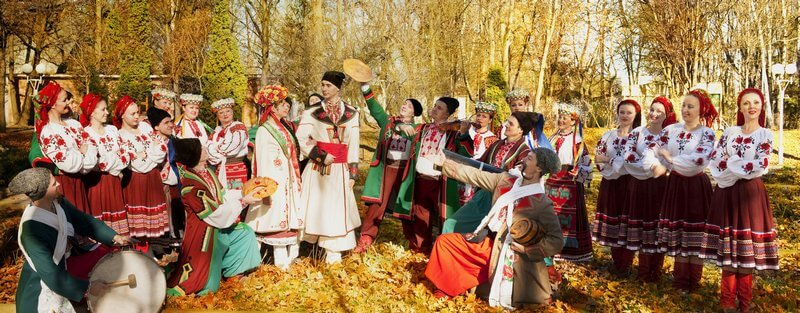
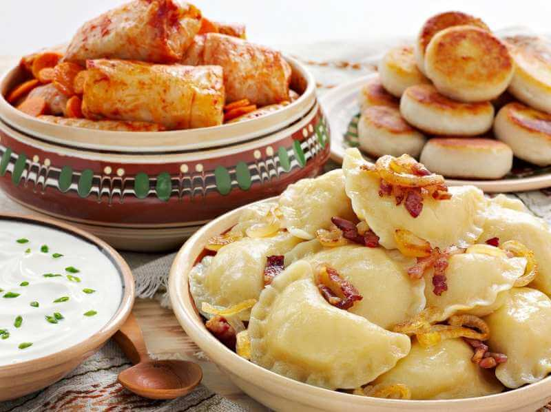

UKRAINIAN CUSTOMS AND TRADITIONS
SOME HISTORY
The best way to immerse in the atmosphere of a country you are visiting, is to taste national dishes, wine, and to take part in a traditional celebration. Nowadays the revitalizing of national customs and traditions becam extremely popular. Taking part in Ukrainian holidays and festivals, discovering ancient folk arts and handcrafts is a favorite pastime among locals and tourists. Customs and traditions of Ukrainian people are very diverse and have deep roots in Trypillian culture, the periods of the early Slavs and the Kyivan Rus; they arose from a mix of a pagan and Christian background. Ukrainian customs and traditions can be broadly divided as related to the main events of a family life (such as a wedding, childbirth, christening, funerals etc.); and seasonal rituals, which came from pre-Christian times and connected with the agricultural activity and the years cycle. All religious rites are frequently echoed with pagan ones.
UKRAINIAN WEDDING TRADITIONS
Talking about family traditions, the wedding is the most interesting and complicated one. It started from so-called brides ransom when a groom had to buyout a bride from her parents. After the buyout, the bride and the groom were blessed by their parents and went to a church for the wedding. The important attributes of the wedding ceremony were special wedding bread and embroidered towels as the symbols of welfare and happiness.Traditional Ukrainian wedding is bustling and cheerful, accomplished with jokes, music, dancing. In past times, a wedding could last for a week. Unfortunately, nowadays it is only one or two days long.
NATIONAL COSTUMES
The essential role in all celebration played national costumes and cuisine. Traditional Ukrainian woman costume consists of several elements, the main of which is an embroidered shirt, zapaska (traditional skirt), krajka (traditional belt), young unmarried girls wore vinok (flower crown). Men also wore a shirt, sharovary (wide trousers) and a long belt. The elements of the traditional costumes were not the same all over the country and vary by regions. Whats more, it depended on social and marital status, age, place of living (a village or a city). Nowadays Ukrainian embroidered shirts are famous all over the world for its beauty and uniqueness. Each color and ornament has its own sacred meaning. The most popular elements of embroidery are geometric shapes, floral and animal ornaments, and the symbol of the World Tree.
NATIONAL DISHES
Ukrainian traditional cuisine includes a lot of flour products (varenyky, galushky, pyrogy), vegetable dishes (borsh, kapusniak), pork, and salo (pork fat). You have a unique opportunity to try your hands at cooking Ukrainian traditional dishes such as varenyky and borsch. Another part of Ukrainian customs and traditions were connected with the cycle of the year and harvesting. In winter, the most important holiday was Christmas, which in pre-Christian times was a holiday of the winter solstice.
Traditionally, twelve lean dishes should be cooked for the Christmas Eve dinner. In pagan times it was a symbol of zodiac signs, but nowadays its a symbol of twelve Apostles. Christmas carols are usually accompanied with a special performance and they also combine Christian and folk traditions.
